SOFTWARE / SYSTEMS / A LITTLE PLAY
Every square
has a story.
A skyline of small steps. A game hidden in the grid.
Explore my GitHub activity, then take the snake for a spin.
01 / ACTIVITY, IN ANOTHER DIMENSION
Contribution skyline

Loading activity snapshot…
02 / THE GRID IS YOURS
Pulse Snake
SCORE 0BEST 0
Collect the glowing squares. Avoid the edges and your own trail. The backdrop comes from the activity snapshot; playing never modifies GitHub.
Press Let’s play to start.
BACK TO BUILDING
Interfaces. Networks.
Things that connect.
I work across full-stack software, embedded systems and applied research.